Visualización de datos en R
Visualizar distribuciones
Universidad de Córdoba, Montería
11/03/2026
Visualización de distribuciones
Introducción
La forma de visualizar la distribución de una variable depende del tipo de variable:
- categórica
- numérica.
Variables categóricas
Una variable categórica
Una variable categórica (también denominada variable cualitativa) es aquella cuyas unidades de observación se clasifican en un conjunto de categorías o clases mutuamente excluyentes y colectivamente exhaustivas, las cuales no poseen una magnitud numérica intrínseca por naturaleza.
Para examinar la distribución de una variable categórica, puede utilizar un gráfico de barras.
La altura de las barras muestra cuántas observaciones ocurrieron con cada valor
x.
Carga de librería
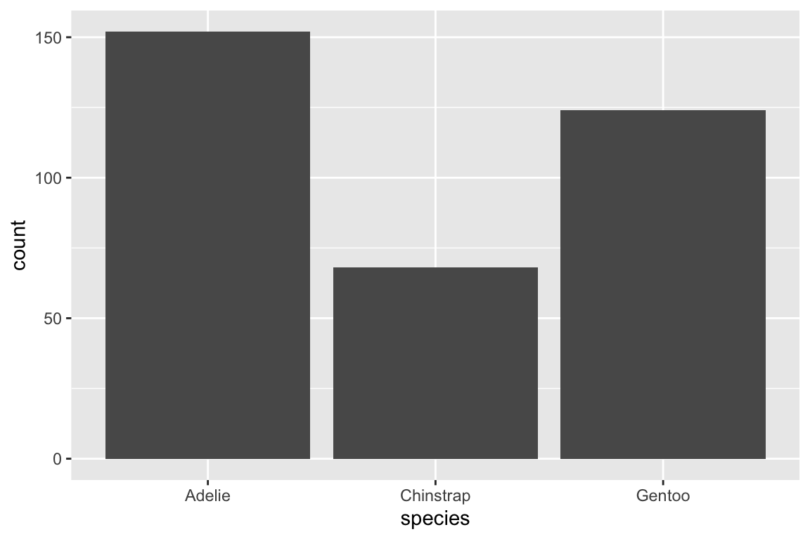
Ordenar por la frecuencia
En los gráficos de barras de variables categóricas con niveles no ordenados, como la especie de los pingüinos, a menudo es preferible reordenar las barras en función de sus frecuencias.
Para ello es necesario transformar la variable en un factor y luego reordenar los niveles de ese factor.
Ordenar barras por frecuencia
Barras ordenadas
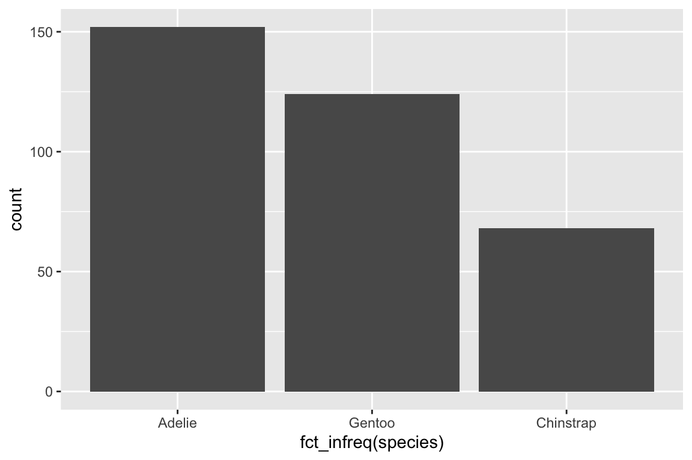
Color de las barras
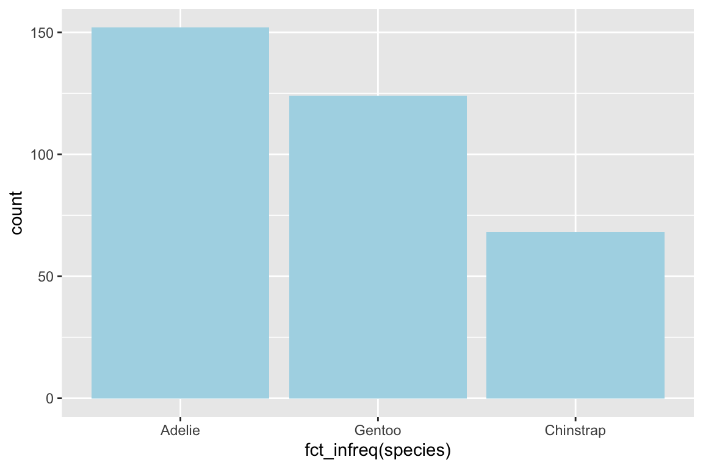
Color de las barras
Color de borde de las barras
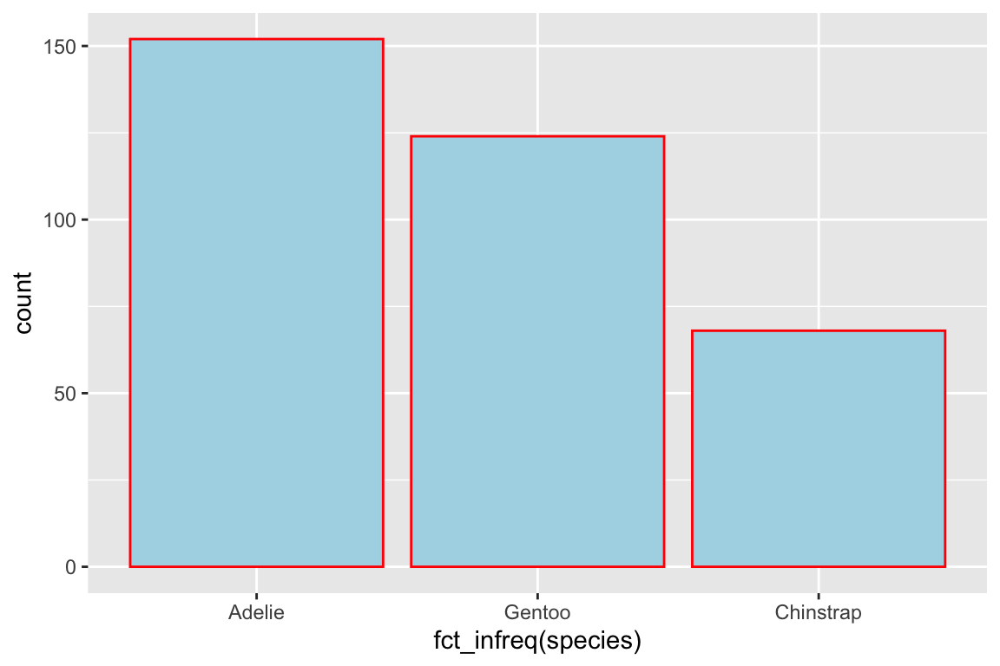
Color de borde de las barras
Frecuencia sobre las barras
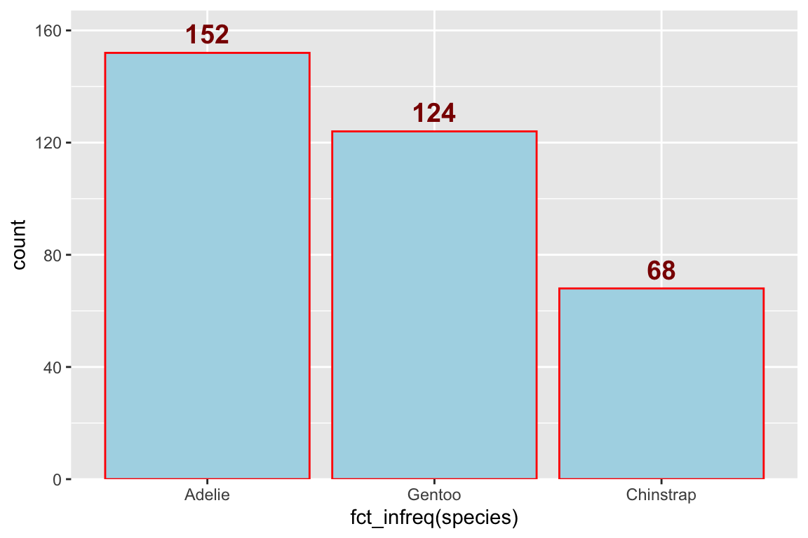
Código
- 1
- Le pedimos que use el conteo calculado
- 2
- Ajuste vertical: -0.5 lo pone “arriba” de la barra
- 3
- Color para que combine con el borde
- 4
- En negrita para mayor claridad
- 5
- Tamaño del texto
- 6
- Importante: aumentar el límite de Y para que el número no se corte
Porcentajes en cada barra
Código
library(scales) # Muy útil para dar formato de % automáticamente
ggplot(penguins, aes(x = species)) +
geom_bar(fill = "steelblue", color = "black") +
geom_text(
stat = "count",
aes(label = after_stat(paste0(round(count / sum(count) * 100, 1), "%"))),
vjust = -0.5, # Lo sitúa justo encima de la barra
size = 4.5,
fontface = "bold"
) +
# Añadimos un poco de espacio extra en el eje Y
scale_y_continuous(expand = expansion(mult = c(0, 0.15))) +
labs(
title = "Distribución Porcentual por Especie",
x = "Especie de Pingüino",
y = "Frecuencia Absoluta (n_i)"
) +
theme_minimal()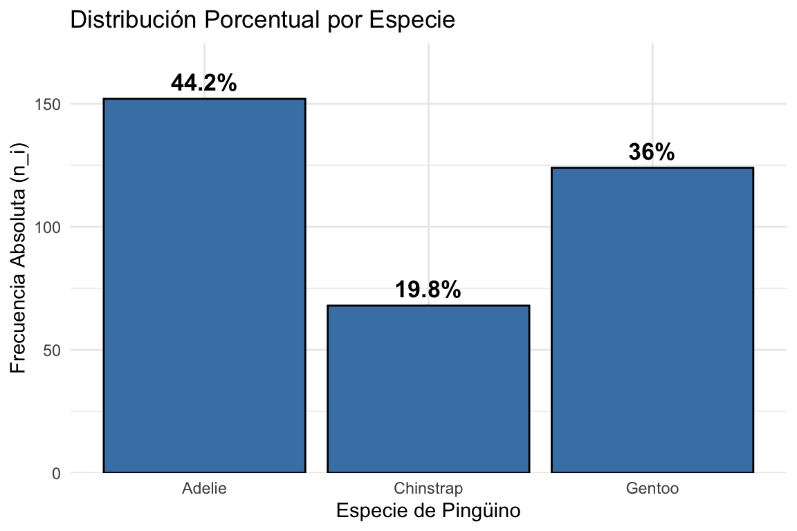
Variables numéricas
Una variable numérica
Una variable numérica es aquella que expresa una característica de la unidad de observación mediante un valor escalar perteneciente al conjunto de los números reales (\(\mathbb{R}\)).
Las variables numéricas pueden ser continuas o discretas.
Una visualización comúnmente utilizada para distribuciones de variables continuas es el histograma.
Un histograma divide el eje
xen intervalos o segmentos igualmente espaciados y luego utiliza la altura de una barra para mostrar la cantidad de observaciones que caen en cada intervalo.
Histograma
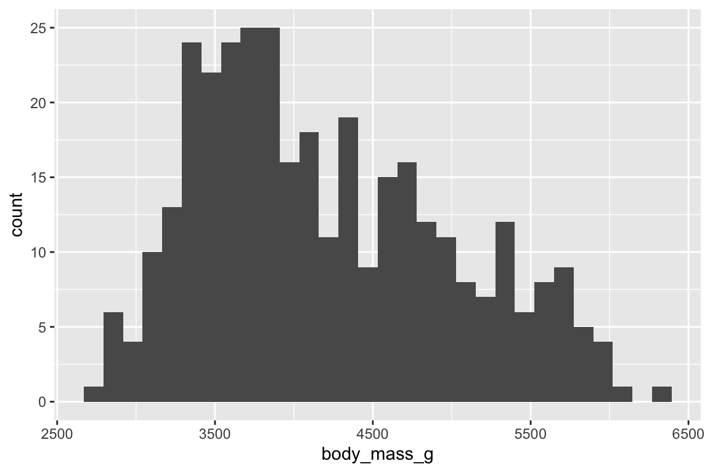
Histograma, código ggplot2

Histograma
Podemos controlar el ancho de los intervalos de clase con binwidth
Histograma
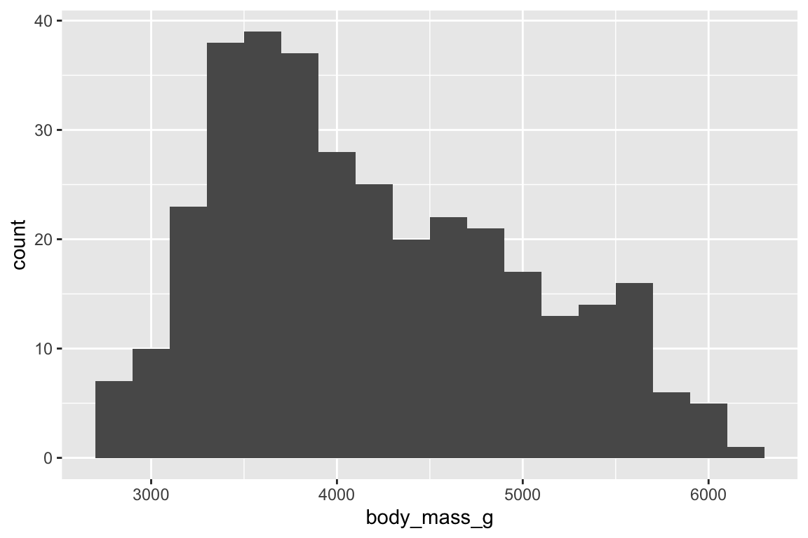
Calcular el binwidth
Código
[1] "Ancho= 360 Rango= 3600 Número de int= 10"Histograma
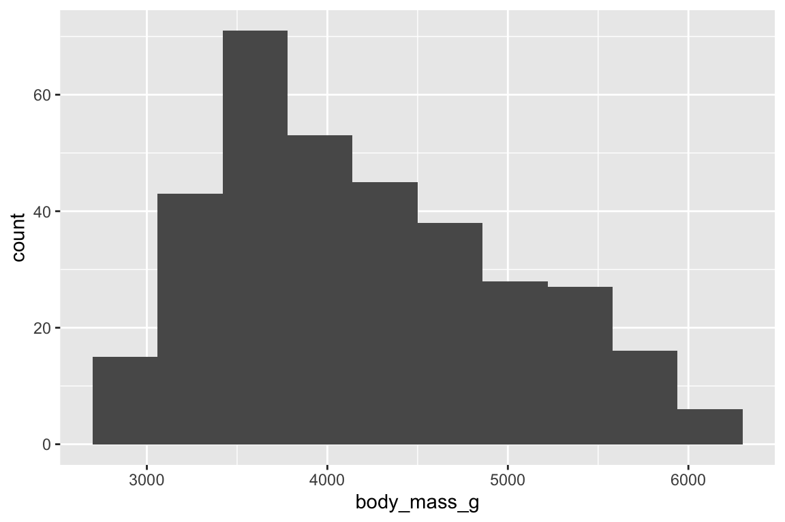
Histograma
Histograma
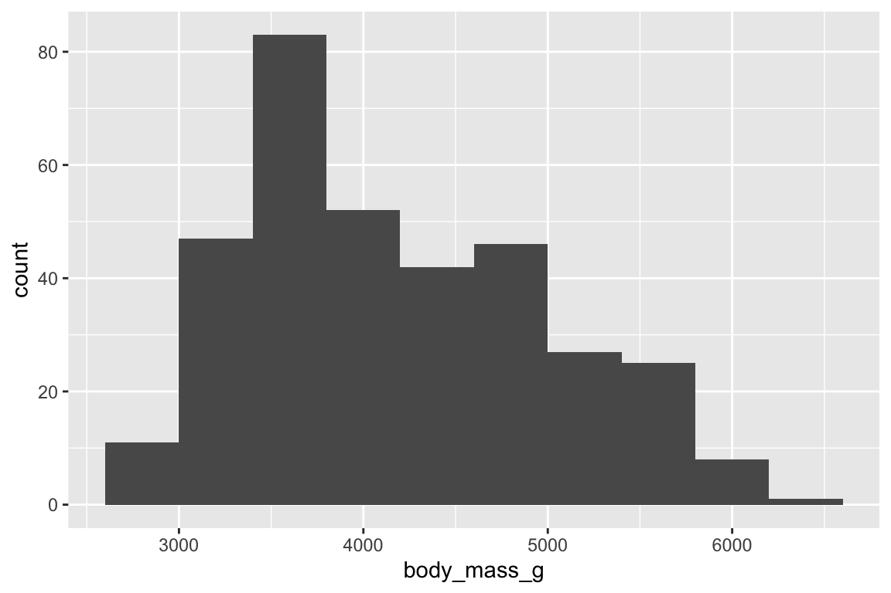
Gráfico de densidad
Una visualización alternativa para distribuciones de variables numéricas es un gráfico de densidad.
Un gráfico de densidad es una versión suavizada de un histograma y una alternativa práctica, particularmente para datos continuos que provienen de una distribución suave subyacente.
Imagínese un histograma hecho con bloques de madera.
Luego imagina que dejas caer sobre él un hilo de espagueti cocido.
La forma que adoptarán los espaguetis al colocarlos sobre los bloques puede considerarse como la forma de la curva de densidad.
Muestra menos detalles que un histograma, pero puede facilitar la comprensión rápida de la forma de la distribución, particularmente con respecto a los modas y la asimetría.
Gráfico de densidad
Gráfico de densidad
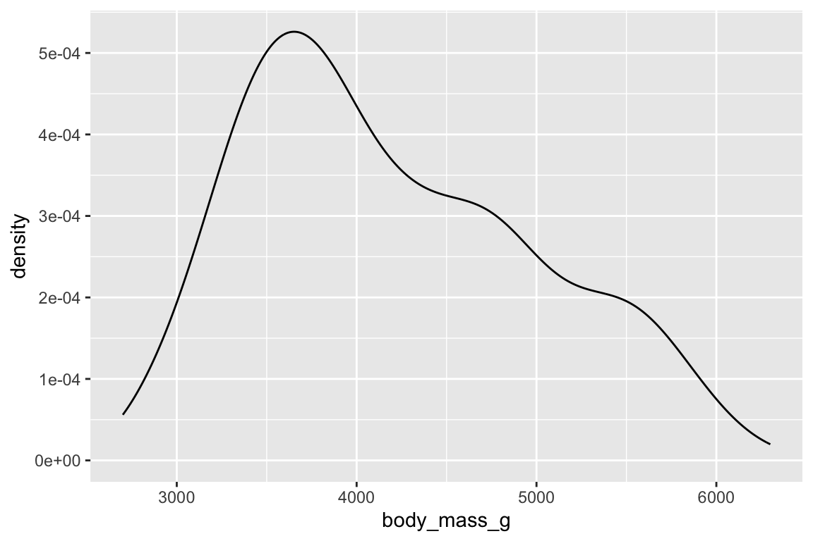
Ejercicios I
Haz un diagrama de barras de especies de pingüinos, donde asignas especies a la estética y. ¿En qué es diferente este gráfico?
¿En qué se diferencian los dos gráficos siguientes? ¿Qué estética, color o relleno, es más útil para cambiar el color de las barras?
Ejercicios II
¿Qué hace el argumento
binsengeom_histogram()?Realice un histograma de la variable
caraten el conjunto de datosdiamondsque está disponible cuando carga el paquetetidyverse. Experimente con diferentes valores de ancho de banda. ¿Qué valor revela los patrones más interesantes?
Dos variables
Visualizando relaciones
Para visualizar una relación necesitamos tener al menos dos variables asignadas a la estética de un gráfico.
En las siguientes secciones aprenderá acerca de los gráficos comúnmente utilizados para visualizar relaciones entre dos o más variables y las geometrías utilizadas para crearlas.
Una variable numérica y la otra categórica
Podemos utilizar diagramas de caja uno al lado del otro.
Un diagrama de caja es un tipo de representación visual de las medidas de posición (percentiles) que describen una distribución.
También es útil para identificar posibles valores atípicos.
El boxplot consta de …
Un cuadro que indica el rango de la mitad central de los datos, una distancia conocida como rango intercuartil (RIC), que se extiende desde el percentil 25 de la distribución hasta el percentil 75.
En el medio de la caja hay una línea que muestra la mediana, es decir, el percentil 50, de la distribución.
Estas tres líneas le dan una idea de la dispersión de la distribución y de si la distribución es simétrica respecto de la mediana o está sesgada hacia un lado.
Puntos que muestran observaciones que caen más de 1.5 veces el RIQ desde cualquier borde de la caja. Estos puntos periféricos son inusuales, por lo que se representan individualmente.
Una línea (o bigote) que se extiende desde cada extremo de la caja y va hasta el punto no atípico más lejano de la distribución.
Boxplot de la masa corporal por especie
Echemos un vistazo a la distribución de la masa corporal por especie usando geom_boxplot():
Boxplot de la masa corporal por especie
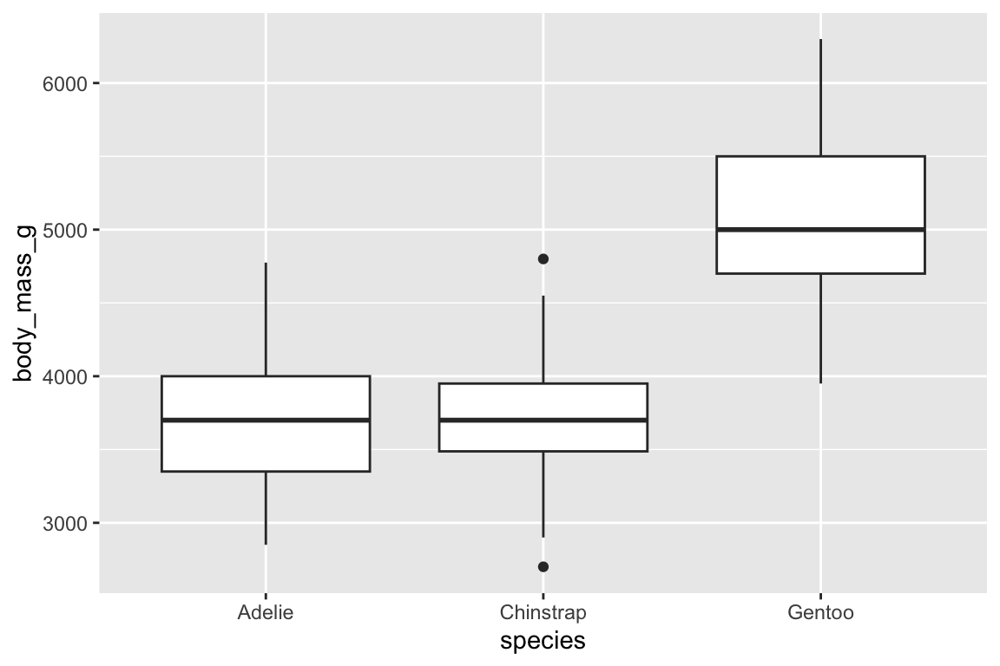
Boxplot de la masa corporal por especie
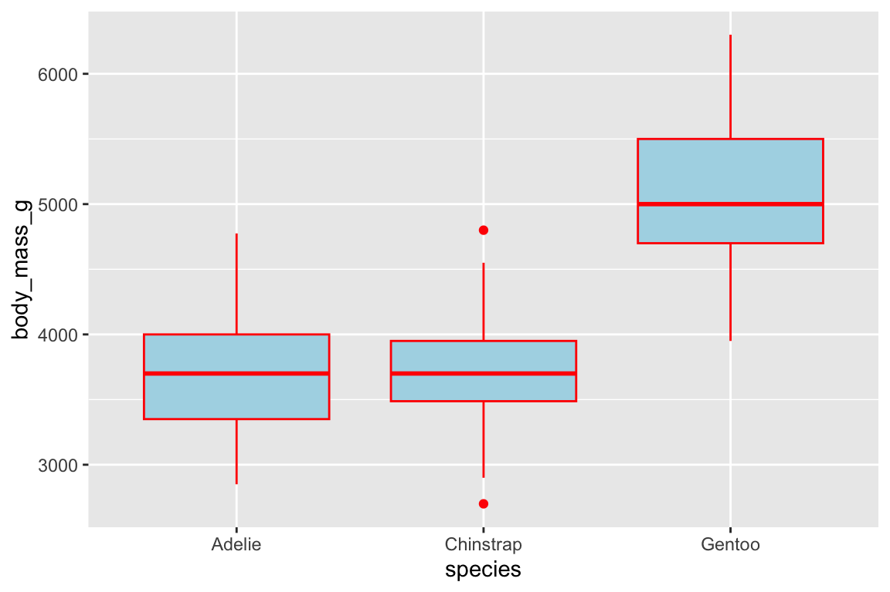
Gráfico de densidad
Alternativamente, podemos hacer gráficos de densidad con geom_density():
Gráfico de densidad
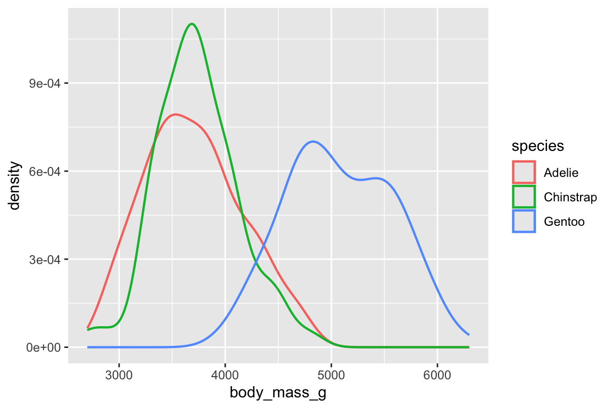
Gráfico de densidad
Gráfico de densidad
Podemos asignar
speciesa la estéticacoloryfill(relleno) y usar la estéticaalphapara agregar transparencia a las curvas de densidad rellenas.Esta estética toma valores entre 0 (completamente transparente) y 1 (completamente opaco).
En el siguiente gráfico se establece
alphaen 0.5
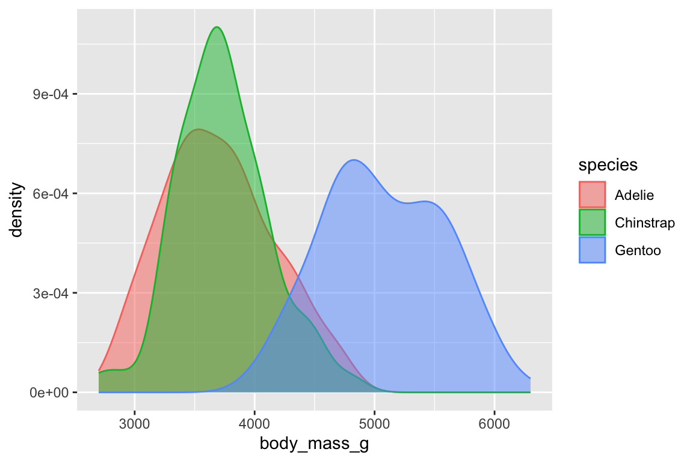
Diferencia entre ‘map’ mapear y ‘set’ establecer
Tenga en cuenta la terminología que hemos utilizado aquí:
Mapeamos
(map)variables a la estética si queremos que el atributo visual representado por esa estética varíe en función de los valores de esa variable.De lo contrario, establecemos
(set)el valor de una estética.
Dos variables categóricas
Podemos utilizar gráficos de barras apiladas para visualizar la relación entre dos variables categóricas.
Por ejemplo, los siguientes dos gráficos de barras apiladas visualizan la distribución de especies dentro de cada isla.
El primer gráfico muestra las frecuencias de cada especie de pingüino en cada isla.
Barras apiladas
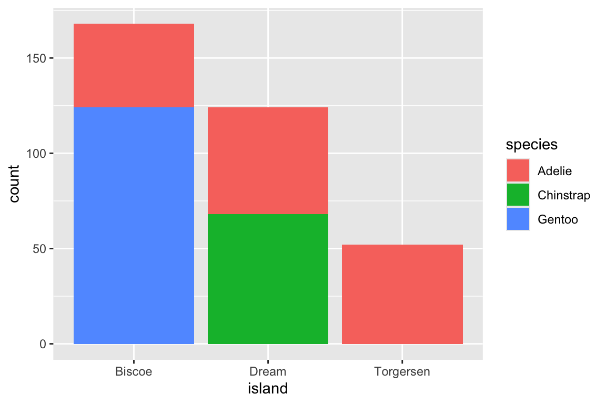
Barras apiladas código
Comentario
- El gráfico de frecuencias muestra que hay un número igual de pingüinos
Adeliesen cada isla, pero no tenemos una buena idea del equilibrio porcentual dentro de cada isla.
Gráfico de frecuencias relativas
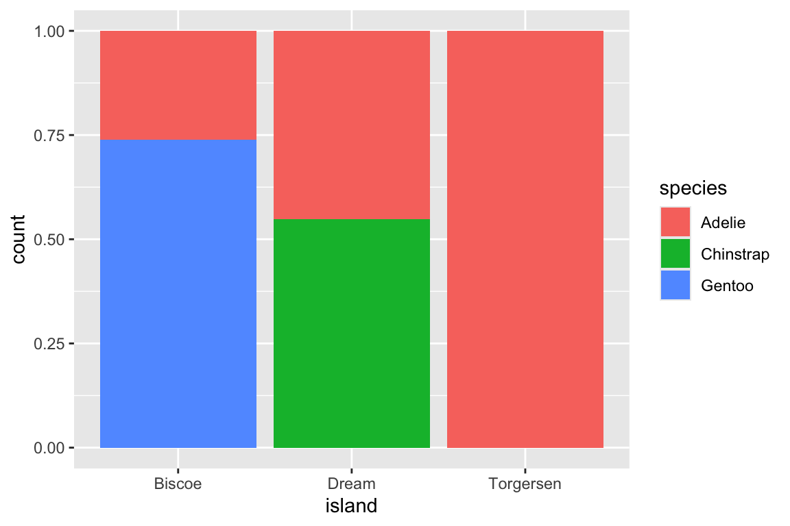
Gráfico de frecuencias relativas, código
Gráfico de frecuencias relativas, código
Ejercicio
El conteo dentro de la barra relativa:
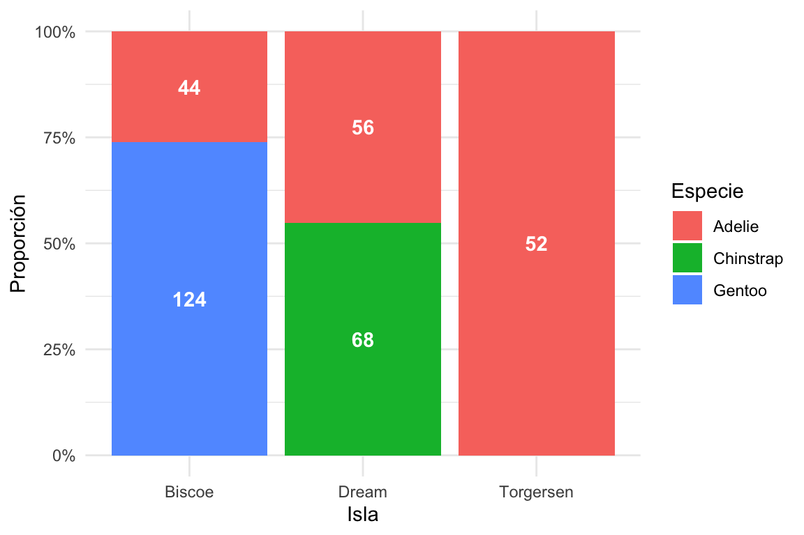
Análisis
El gráfico de frecuencia relativa es más útil para comparar distribuciones de especies entre islas, ya que no se ve afectado por el número desigual de pingüinos en las islas.
Usando este gráfico podemos ver que los pingüinos
Gentooviven todos en la isla Biscoe y representan aproximadamente el 75% de los pingüinos en esa isla.Los pingüinos
Chinstrapviven todos en la islaDreamy representan aproximadamente el 50% de los pingüinos en esa isla,Los pingüinos
Adelieviven en las tres islas y representan todos los pingüinos en Torgersen.
Dos variables numéricas
Hasta ahora has aprendido sobre diagramas de dispersión (creados con
geom_point()) y curvas suaves (creadas congeom_smooth()) para visualizar la relación entre dos variables numéricas.Un diagrama de dispersión es probablemente el gráfico más comúnmente utilizado para visualizar la relación entre dos variables numéricas.
Gráfico de dispersión
Gráfico de dispersión
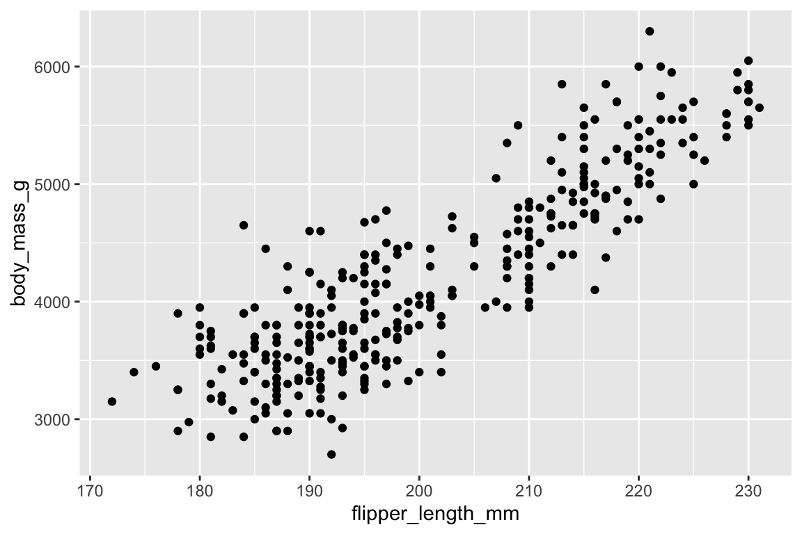
Tres o más variables
Podemos incorporar más variables a un gráfico al asignarles una estética adicional.
Por ejemplo, en el siguiente diagrama de dispersión los colores de los puntos representan especies y las formas de los puntos representan islas:
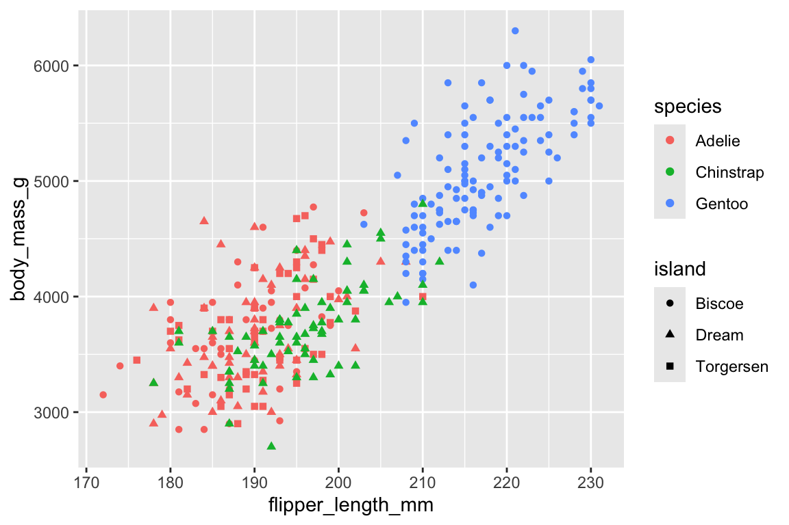
Separar el gráfico en facets
Sin embargo, añadir demasiados mapeos estéticos a un gráfico lo vuelve desordenado y difícil de entender.
Otra opción, que es particularmente útil para las variables categóricas, es dividir el gráfico en
facets, subgráficos que muestran en cada gráfico un subconjunto de los datos.Para dividir el gráfico mediante una sola variable, utilice
facet_wrap().El primer argumento de
facet_wrap()es una fórmula que se crea con~seguido de un nombre de variable.La variable que pase a
facet_wrap()debe ser categórica.
facet_wrap()
facet_wrap()
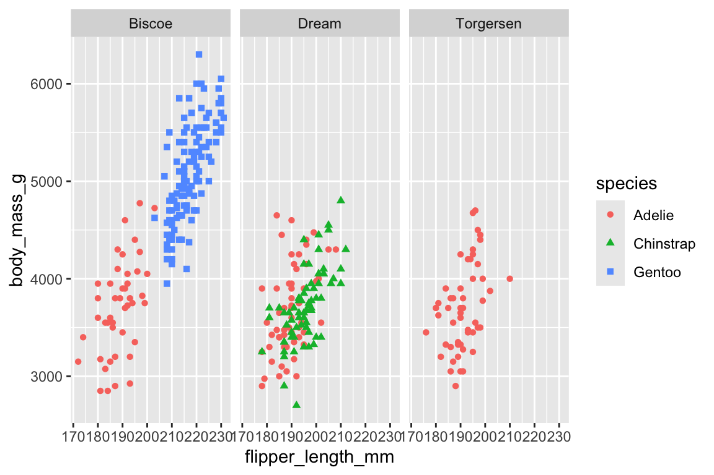
Ejercicios
En el gráfico anterior las islas están organizadas por filas (una al lado de la otra), como se hace para organizarlas por columnas (una debajo de la otra)
Haz un diagrama de dispersión de
bill_depth_mmversusbill_length_mmy colorea los puntos por especie.- ¿Qué revela la adición de color por especie sobre la relación entre estas dos variables?
- ¿Qué pasa con
facet_wrappor especie?
Ejercicio
- ¿Por qué el siguiente código produce dos leyendas separadas? ¿Cómo lo arreglarías para combinar las dos leyendas?
Ejercicios
- Cree los dos gráficos de barras apiladas siguientes.
- ¿Qué pregunta puedes responder con el primero?
- ¿Qué pregunta puedes responder con el segundo?
Guardar los gráficos
Una vez que hayas creado un gráfico, es posible que quieras guardarlo como una imagen que puedas usar en otra aplicación.
Eso se hace con la función
ggsave(), que guarda el último gráfico creado en el disco: